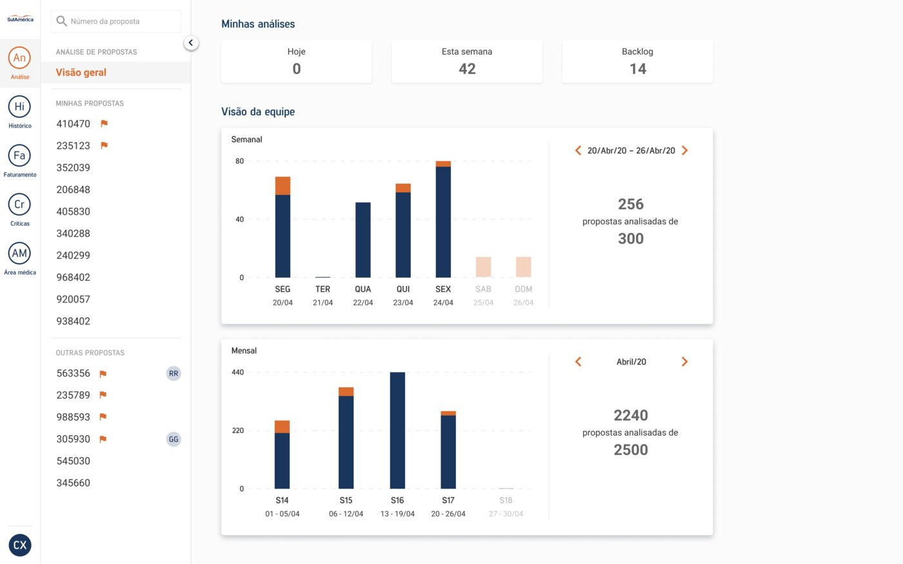
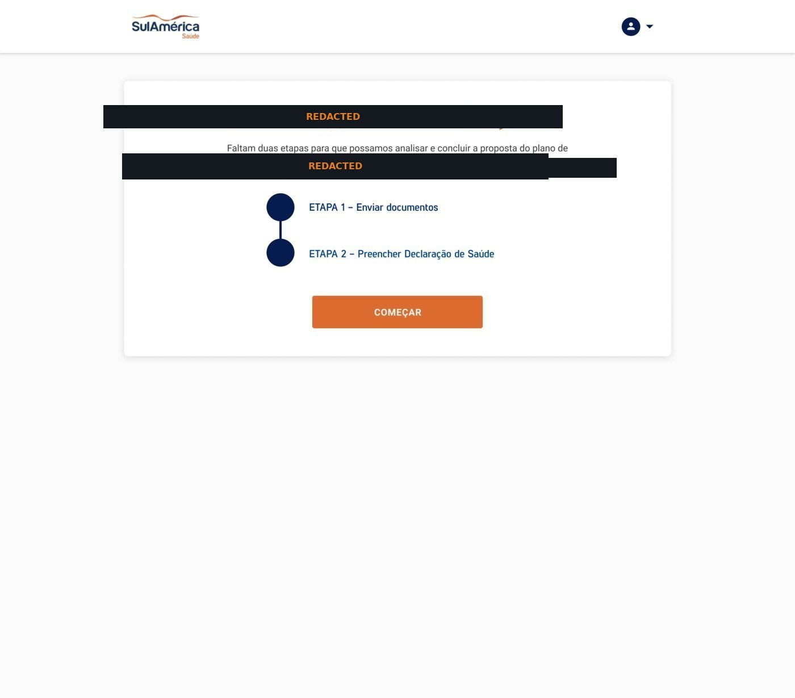
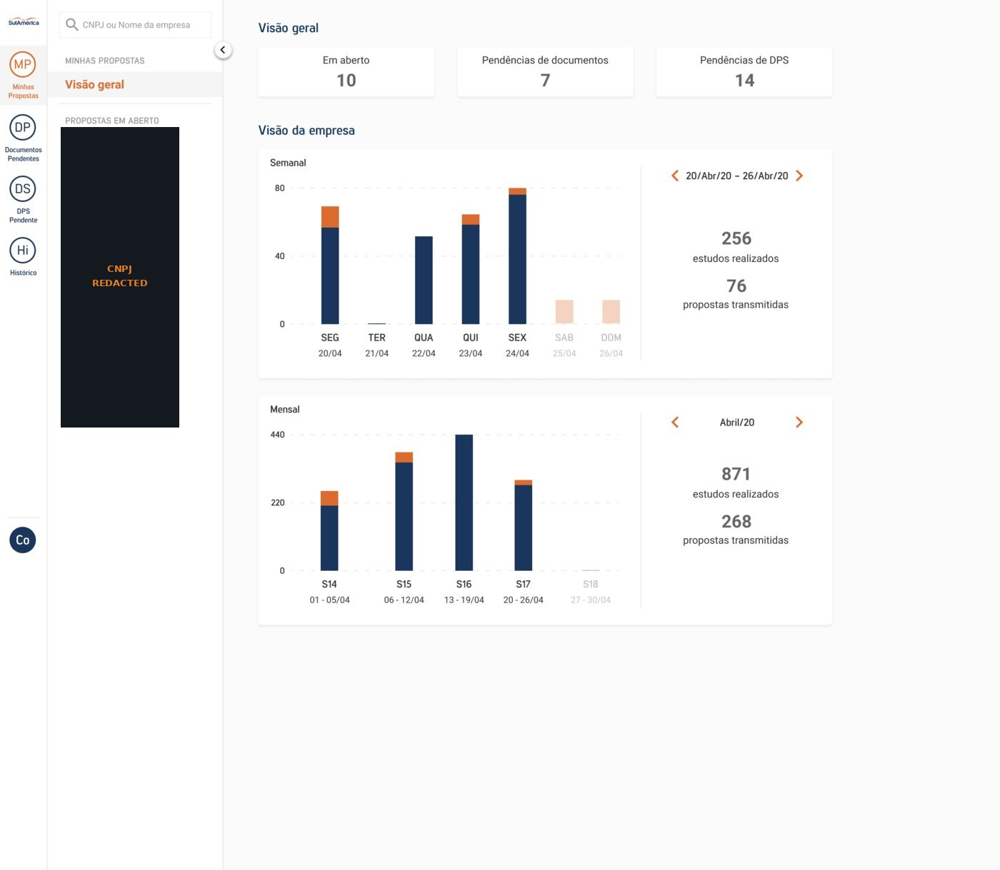
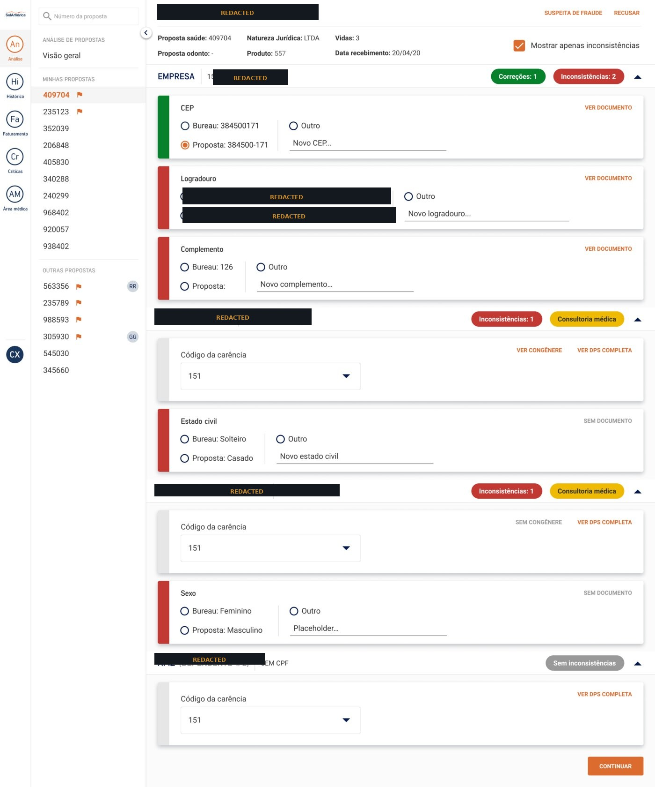
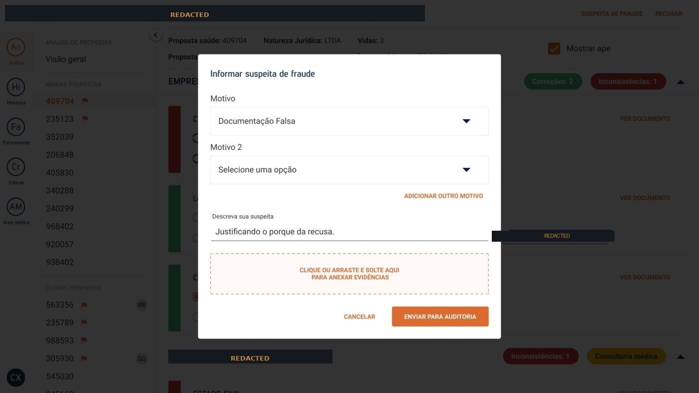
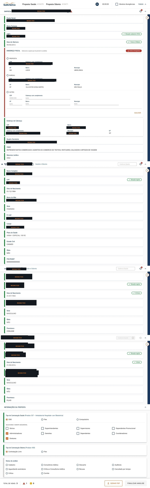
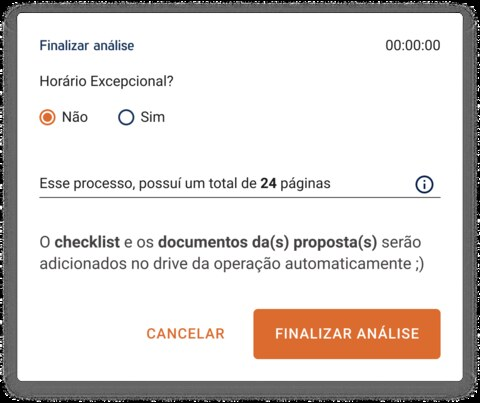
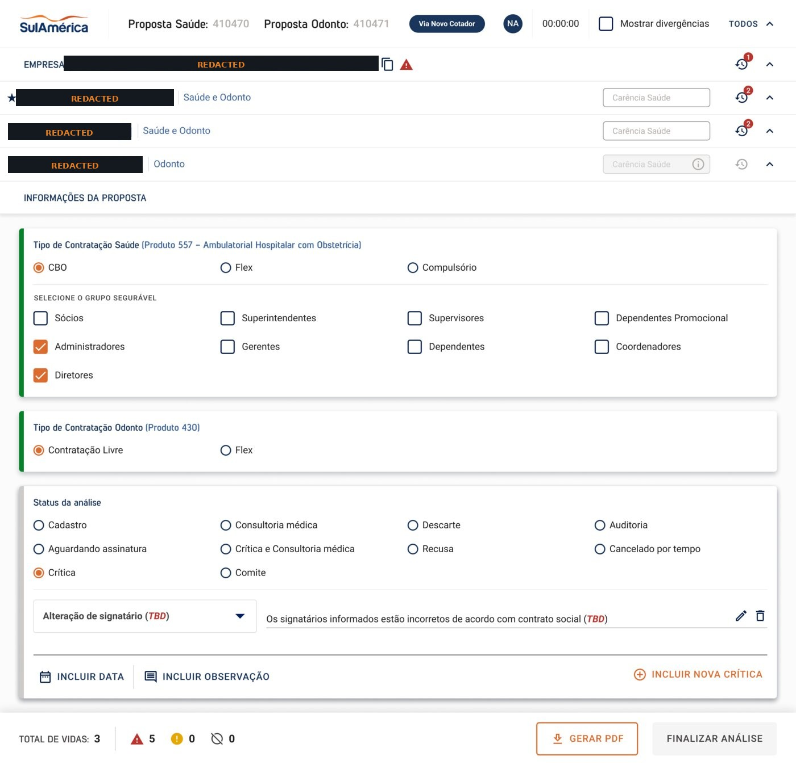
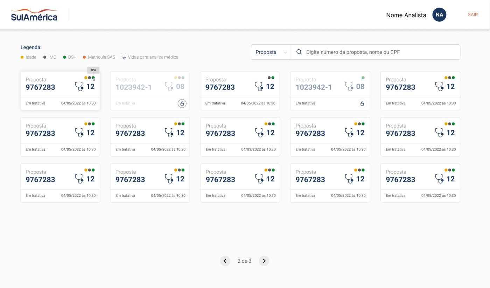

Digitizing medical proposal review and insurance issuance at enterprise scale — centralizing a high-risk, multi-role operation that used to run across spreadsheets, mail, and phone calls.
Role
Senior Product Designer
Timeline
18 months, incremental MVP releases
Users
Analysts, nurses, audit & fraud teams
Product
Digital Issuance Platform
1,000+screens & operational states
60→25 mintypical proposal analysis time
+93%call connection after WhatsApp pilot
R$9Mreported paper-cost reduction, H2 2022
Business context
The medical proposal review process was fragmented across automated Google Sheets, physical document packages sent by mail, Salesforce dependencies, phone calls, and manual handoffs. Different teams needed different information, permissions, and decisions within the same proposal lifecycle — post-pandemic, under strong cost and risk pressure.
The challenge
Transformation goal
Centralize a high-risk, multi-role insurance operation in one digital platform while improving speed, traceability, governance, and role-based access.

Insurance analyst
Reviews documentation and eligibility — needs weekly and monthly throughput visibility across the team.

Client company
Submits documents and health declarations for their own employees — a simpler, guided step-by-step surface.

Broker
Tracks open proposals, pending documents, and pending health declarations across their client book.
Discovery and product strategy
Mapped current-state workflows, dependencies, manual controls, and exception paths with stakeholders
Benchmarked CRM and enterprise workflow products
Worked continuously with business, operations, technology, healthcare specialists, and audit stakeholders
Designed role-based journeys and permissions to preserve privacy and reduce cognitive overload
Released functionality incrementally as MVP modules so users could adopt the platform as it evolved
Experiment — improving nurse contact rates
Nurses had three attempts to call applicants and validate the Personal Health Declaration. Unanswered calls could send a proposal back to an earlier stage and leave it unresolved for a day or more. We piloted a WhatsApp message sent before the phone call — a reported 93% increase in answered calls, and better continuity in the health-review workflow.

Proposal review. Proposal data compared field-by-field against bureau data, with per-family-member breakdown and consultoria médica flags. Company and applicant identifiers redacted for confidentiality.

Fraud review. Analysts flag a suspected-fraud reason, attach evidence, and send the case to audit — without leaving the proposal.
Design and delivery
Designed 1,000+ screens and states across documentation, health assessment, fraud review, queues, statuses, and exception handling
Created and extended components within SulAmérica's emerging Design System
Translated manual controls into role-based digital workflows and traceable decision states
Partnered with Engineering and Product through refinement, testing, release, and iteration
Supported continuous production releases rather than a single big-bang launch

Field-level detail. Every company and beneficiary field, expandable for the exact comparison an analyst needs to resolve.

Finalize analysis. Page count and drive sync shown before an analyst closes out a case.

Status workflow. Cadastro → Consultoria médica → Crítica → Auditoria → Comitê — the full lifecycle a proposal can move through, in one screen.

Medical queue. Cases prioritized by age, BMI, and enrollment code — with visible SLA status per card.
Outcome
Typical proposal analysis reduced from about 60 minutes to a maximum of ~25 in the improved flow
Fewer delays caused by unanswered health-validation calls
Previously fragmented tools, spreadsheets, documents, and manual handoffs centralized into one platform
Improved traceability, governance, and fraud-review visibility
Contributed to a program associated with a reported R$9M reduction in paper usage, H2 2022
Evidence note — metrics above reflect outcomes reported or observed for the broader program and cross-functional team, not individual-only attribution.
What I learned
Enterprise transformation succeeds through incremental adoption, not only interface quality. Pilots, role clarity, operational feedback, and measurable workflow changes were essential to delivering value in a regulated health-insurance environment.